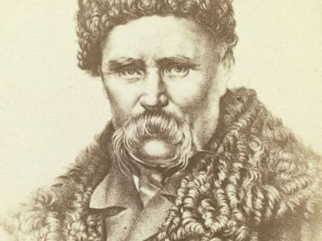
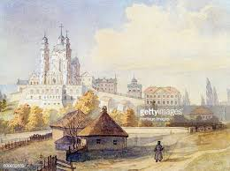

Taras Shevchenko


One of the Greatest Ukranian poet
Here's a time line of Dr. Borlaug's life:
- 9 March [O.S. 25 February] 1814 - Born in vilage Moryntsi
- In 1816 - Shevchenko family moved back to the village of Kyrylivka
- In the fall of 1822 Taras started to take some grammar classes at a local precentor (dyak) Sovhyr.
- During 1822-1828 Shevchenko painted horses and soldiers.
- In 1824 Taras, along with his father, became a traveling merchant (chumak) and traveled to Zvenyhorodka, Uman, Yelizavetgrad (today Kropyvnytskyi).
- In 1840 he again received the Silver Medal, this time for his first oil painting, The Beggar Boy Giving Bread to a Dog.
- In 1841, the epic poem Haidamaky was released.
- In 1842, he released a part of the tragedy Mykyta Haidai
- In 1843 he completed the drama Nazar Stodolia.
- On 22 March 1845, the Council of the Academy of Arts granted Shevchenko the title of a non-classed artist.
- Shevchenko died in Saint Petersburg on 10 March 1861, the day after his 47th birthday.
If you have time, you should read more about this incredible human being on his Wikipedia entry.